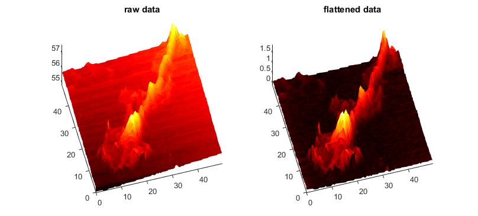

SICM namespace documentation
The namespace SICM provides tools to handle, analyze and process SICM data. There are several (outdated) functions in this namespace which will not be documented (but the function may or may not be documented), as well as some classes. One should use the classes.
Contents
Classes in the namespace
The following classes are provided by this collection. You can try to click on the links below, however, they might not be documented as publishable files, hence linking might not work.
General remarks
The following information is for the two classes listed above. They share some principles which are briefly listed here. The first is how to generate an object of one of the classes. The simplest way is to simply generate such an object calling the constructor of the class. Note that the prefix SICM. is required since the classes reside in the namspace SICM.
scan = SICM.SICMScan();
However, this results in an empty SICMSCan-object. While this might be desired in some special cases, in most cases you want to load data from an experiment into such a class. For this purpose, both classes are equipped with static functions, which allow generating objects from data. The most common static method is FromFile, which can be either called with a filename as argument or without an argument, which will open a file selection dialog
scan = SICM.SICMScan.FromFile();
(Todo: If you click cancel in the file selection dialog, an error will occur. This should be fixed.)
Both classes provide a number of methods that allow manipulating the data. However, there is no undo-function in Matlab, hence it is worth copying the object before changing the data. However, note the following. Let's create an SICMSCan-object with exemplary data
scan = SICM.SICMScan.FromExampleData();
The volume of the scan can be received by the method volume():
scan.volume()
ans = 1.3937e+05
Lets now copy the scan object
scan2 = scan; scan2.volume()
ans = 1.3937e+05
Of course, scan2 has the same volume as scan since they are copies. Now, let's manipulate the x-size of scan2
scan2.setXSize(25);
Since now the pixel width in one direction has changed, the volume has changed, too:
scan2.volume()
ans = 6.9684e+04
But if we look at the volme of scan
scan.volume()
ans = 6.9684e+04
we see that its volume has changed, too. This is due to the way Matlab implements object oriented programming. To avoid lazy copying, the classes in this namespace are derived from the handle class, which results in this behaviour. Hence, nearly every method that manipulates data detects whether an output argumnt is requested, an in this case make a true copy of the original object, which is in turn manipulated and returned. For the example above:
scan = SICM.SICMScan.FromExampleData(); scan2 = scan.setXSize(25); scan2.volume()
ans = 6.9684e+04
scan.volume()
ans = 1.3937e+05
Common methods
Both classes share the method plot to quickly show the data. Hence, to see the effect of a data manipulation, one can do the following:
figure('Position',[30 30 800 375]); scan = SICM.SICMScan.FromExampleData(); subplot(1,2,1); plot(scan); title('raw data'); axis tight, view(-15, 70); scan2 = scan.flatten('linewise'); subplot(1,2,2); plot(scan2); title('flattened data'); axis tight, view(-15, 70); colormap(hot);
For the class SICMScan, the plot method has on additional argument which allows interpolation:
clf; subplot(1,2,1); plot(scan2); title('flattened data'); axis tight, view(-15, 70); subplot(1,2,2); plot(scan2,10); title('interpolated flattened data'); axis tight, view(-15, 70); colormap(hot);
Which data can be imported and how can data import be extended?
Data importing is in my opinion one of the most annoying things when handling SICM data. To simplify this, the class importer resides in this namespace, too, and the SICM data classes inherit from it. The importer class provides (besides an empty constructor) only two functions: getFilename_ and getObjectFromFilename_. The first function is responsible for the correct file selection dialog, the second for opening the data file and returning the respective object.
However, the information which data can be processed and how it is imported still has to be provided to the class. The derived classes have a constant property called importers which is a cell array conatining the importers known for this class. An importer in this case is a struct that conatins the following:
| fieldname | content |
|---|---|
name | A name identifying ans explaining the importer |
exts | A string containing the file extensions that can be handled by this import (as requested by the uigetfile function). |
expl | A string describing the file types (as requested by the uigetfile function). |
extlist | A cell containing the extensione, including the leading dot, for easier parsing with strcmp |
handle | A handle to a function that imports the data and returns the object |
For example, the importer struct to import .sic or .ras files looks like this:
struct(... 'name' , 'ASCII data import, PH', ... 'exts' , '*.sic; *.ras;',... 'expl' , 'ASCII data files (*.sic, *.ras)',... 'extlist', {{'.sic', '.ras'}},... 'handle' , @local_ReadAsciiData... )
To add a new importer, simply add another importer struct to the importers constant.
Extended functionality, code guidelines
The code of the classes is organized in files, residing in a folder starting with @, followed by the class name. Within this folder, there is a file classname.m which contains the properties, the constructor, the signature of the methods and, optional, local functions.
To extend a class, add the function signature to the class definition and add the corresponding function in a file in the @classname folder.
I suggestto follow these naming conventions:
static functions: Should start with an uppercase letter and be CamelCased.
internal static functions: There is no true difference between static functions and internal static functions. To indicate that the function is intended for internal use, make them start lowercase and end with and underscore (_) (Note, in many code conventions, private or internal function start with an underscore, but Matlab does not allow this, hence I suggest to add it at the end of the function name).
public function: Should start lowercase and be CamelCased. If they manipulate the data, they should return a copy of the object instead of modyfying the object itself, when an output argument is requested.
private functions: As internal static function
local functions: Local helper functions should start with local_. No other conventions apply.
Example for extending a class
Let's add a function invert to the SICMSCan class, which inverts (multiplying by -1) the zdata of the scan (note that this function is included in the class, but it is mostly useless and just taken as an example).
Since the function manipulates the data, it should return a copied object, if requested. hence, we add the following signature to the SICMScan.m file
methods (Access = public) % ... varargout = inverse(self); % ... end
and add the file inverse.m to the folder @SICMScan:
function varargout = inverse(self) % This function inverses the z-data of the object. % % Examples: % obj.inverse() % The data of obj is inversed. % % newobj = obj.inverse() % % Returns a new object with the inversed data of obj. obj is not % modified. % If an output argument is specified, copy the object and call % the inverse() method of this object. Then return it and leave the % method. if nargout == 1 o = SICM.SICMScan.fromSICMScan_(self); o.inverse(); varargout{1} = o; return end % now do the work: self.multiply_(-1); end
Test it:
scan = SICM.SICMScan.FromExampleData(); scan2 = scan.inverse(); clf; subplot(1,2,1); plot(scan); title('raw data'); axis tight, view(-15, 70); subplot(1,2,2); plot(scan2); title('inversed data'); axis tight, view(-15, 70); colormap(hot);